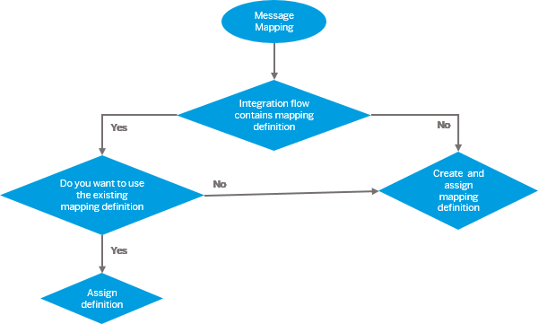

Context
When you create a message mapping step, you have the option of creating a mapping definition
resource or reuse one of the existing mapping definition resources. Your integration
flow contains such a resource in the following cases:
- If you have imported pre-packaged content from the catalog containing
message mapping step with a mapping definition resource
- If you have added a message mapping step and created a mapping definition
resource

Remember You cannot reuse mapping definition resources across integration
flows.
Caution If you delete a message mapping step and the mapping definition
resource associated with it is not used in any other message mapping step, then the
resource also gets deleted.